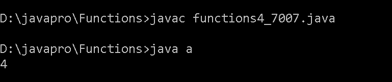
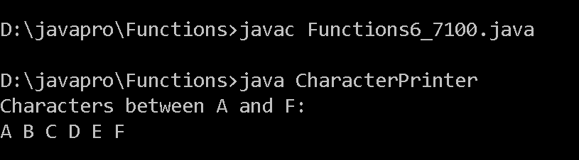
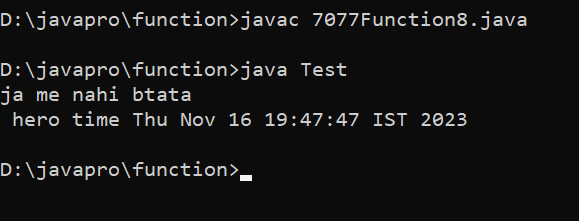
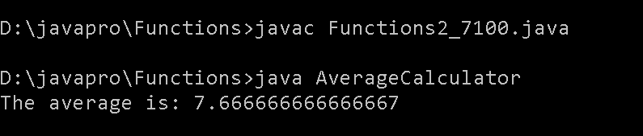
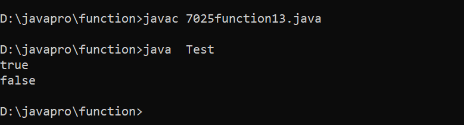

1D ARRAYS
Choose Topic to See Programs
1.Write a Java method to find the smallest number among three numbers.
Program:
class function1{
public static void main(String[] args) {
int num1 = 3;
int num2 = 17;
int num3 = 5;
int smallest = findSmallestNumber(num1, num2, num3);
System.out.println("The smallest number is: " + smallest);
}
public static int findSmallestNumber(int num1, int num2, int num3) {
int smallest = num1;
if (num2 < smallest) {
smallest = num2;
}
if (num3 < smallest) {
smallest = num3;
}
return smallest;
}
}
Output:

2. Write a Java method to compute the average of three numbers.
Program:
class AverageCalculator {
static double computeAverage(double num1, double num2, double num3) {
return (num1 + num2 + num3) / 3.0;
}
public static void main(String[] args) {
double number1 = 10.0;
double number2 = 5.0;
double number3 = 8.0;
double average = computeAverage(number1, number2, number3);
System.out.println("The average is: " + average);
}
}
Output:
3.3. Write a Java method to display the middle character of a string. Note:
a) If the length of the string is odd there will be two middle characters.
b) If the length of the string is even there will be one middle character.
a) If the length of the string is odd there will be two middle characters.
b) If the length of the string is even there will be one middle character.
Program:
import java.util.Scanner;
//Write a Java method to display the middle character of a string. Note:
//a) If the length of the string is odd there will be two middle characters. b)
//If the length of the string is even there will be one middle character.
class function3 {
public static void main(String[] args)
{
Scanner in = new Scanner(System.in);
System.out.print("Input a string: ");
String str = in.nextLine();
System.out.print("The middle character in the string: " + middle(str)+"\n");
}
public static String middle(String str)
{
int position;
int length;
if (str.length() % 2 == 0)
{
position = str.length() / 2 - 1;
length = 2;
}
else
{
position = str.length() / 2;
length = 1;
}
return str.substring(position, position + length);
}
}
Output:

4.Write a Java method to count all the words in a string.
/*Write a java method to count all the words in a string.*/
class a
{
static int countWord(String s)
{
int t=1;
for(int i=0; i < s.length(); i++)
{
if((s.charAt(i) == ' ') && (s.charAt(i+1) != ' '))
{
t++;
}
}
return t;
}
public static void main(String args[])
{
System.out.println(countWord("Hello How are you"));
}
}
Output:

5.Write a Java method to compute the future investment value at a given interest rate for a specified number of years.
Program:
import java.util.Scanner;
class FutureInvestment {
public static void main(String[] args) {
Scanner in = new Scanner(System.in);
System.out.print("Input the investment amount: ");
double investment = in.nextDouble();
System.out.print("Input the rate of interest: ");
double rate = in.nextDouble();
System.out.print("Input number of years: ");
int year = in.nextInt();
rate *= 0.01;
System.out.println("Years FutureValue");
for(int i = 1; i <= year; i++) {
int formatter = 19;
if (i >= 10) formatter = 18;
System.out.printf(i + "%"+formatter+".2f\n", futureInvestmentValue(investment, rate/12, i));
}
}
public static double futureInvestmentValue(double investmentAmount, double monthlyInterestRate, int years) {
return investmentAmount * Math.pow(1 + monthlyInterestRate, years * 12);
}
}
Output:

6. Write a Java method to print characters between two characters (i.e. A to P).
Program:
class CharacterPrinter {
static void printCharactersBetween(char startChar, char endChar) {
if (startChar > endChar) {
char temp = startChar;
startChar = endChar;
endChar = temp;
}
for (char ch = startChar; ch < endChar; ch++) {
System.out.print(ch + " ");
}
System.out.println(endChar);
}
public static void main(String[] args) {
char startChar = 'A';
char endChar = 'F';
System.out.println("Characters between " + startChar + " and " + endChar + ":");
printCharactersBetween(startChar, endChar);
}
}
Output:

7.Write a Java method to check whether a string is a valid password.
import java.util.Scanner;
class Password {
public static final int PASSWORD_LENGTH = 8;
public static void main(String[] args) {
Scanner input = new Scanner(System.in);
System.out.print(
"1. A password must have at least eight characters.\n" +
"2. A password consists of only letters and digits.\n" +
"3. A password must contain at least two digits \n" +
"Input a password (You are agreeing to the above Terms and Conditions.): ");
String s = input.nextLine();
if (is_Valid_Password(s)) {
System.out.println("Password is valid: " + s);
} else {
System.out.println("Not a valid password: " + s);
}
}
public static boolean is_Valid_Password(String password) {
if (password.length() < PASSWORD_LENGTH) return false;
int charCount = 0;
int numCount = 0;
for (int i = 0; i < password.length(); i++) {
char ch = password.charAt(i);
if (is_Numeric(ch)) numCount++;
else if (is_Letter(ch)) charCount++;
else return false;
}
return (charCount >= 2 && numCount >= 2);
}
public static boolean is_Letter(char ch) {
ch = Character.toUpperCase(ch);
return (ch >= 'A' && ch <= 'Z');
}
public static boolean is_Numeric(char ch) {
return (ch >= '0' && ch <= '9');
}
}
Output:

8. Write a Java method to display the current date and time.
import java.util.Date;
class Test
{
static void apnaTimeAgya(Boolean check)
{
if (check)
{
Date d = new Date();
System.out.println(" hero time "+d);
}
else
{
System.out.println("ja me nahi btata");
}
}
public static void main(String args[])
{
Test t = new Test();
t.apnaTimeAgya(false);
t.apnaTimeAgya(true);
}
}
Output:

9.Write a Java method to find all twin prime numbers less than 100.
class Function9 {
public static void main(String[] args) {
findTwinPrimes(100);
}
private static boolean isPrime(int num) {
if (num < 2) {
return false;
}
for (int i = 2; i <= Math.sqrt(num); i++) {
if (num % i == 0) {
return false;
}
}
return true;
}
private static void findTwinPrimes(int limit) {
System.out.println("Twin Prime Numbers less than " + limit + ":");
for (int i = 3; i < limit; i++) {
if (isPrime(i) && isPrime(i + 2)) {
System.out.println("(" + i + ", " + (i + 2) + ")");
}
}
}
}
Output:

10.Write a Java method to count the number of digits in an integer with the value 2. The integer may be assumed to be non-negative.
public class DigitCounter {
public static int countTwos(int number) {
String numberStr = String.valueOf(number);
int count = 0;
for (int i = 0; i < numberStr.length(); i++) {
if (numberStr.charAt(i) == '2') {
count++;
}
}
return count;
}
public static void main(String[] args) {
int number = 22253;
int numberOfTwos = countTwos(number);
System.out.println("The number of 2s in " + number + " is: " + numberOfTwos);
}
}
Output:
11.Write a Java method that accepts three integers and checks whether they are consecutive or not. Returns true or false.
import java.util.Scanner;
class check_consecutive {
public static void main(String s[] )
{
Scanner in = new Scanner(System.in);
System.out.print("Input the first number: ");
int x = in.nextInt();
System.out.print("Input the second number: ");
int y = in.nextInt();
System.out.print("Input the third number: ");
int z = in.nextInt();
System.out.print("The three given numbers are consecutive(true or false) : ") ;
System.out.println(test(x,y,z));
}
public static boolean test(int x, int y, int z){
int max_num = Math.max(x, Math.max(y, z));
int min_num = Math.min(x, Math.min(y, z));
int middle_num = x+y+z - max_num - min_num;
return (max_num - middle_num) == 1 && (middle_num - min_num == 1);
}
}
Output:

12.Write a Java method that accepts three integers and returns true if one is the middle point between the other two integers, otherwise false
<details>
<summary>
<h3>Here is your summary content</h3>
</summary>
<div>
<p>We've put all our other content in a containing div.</p>
<p>This way, we can put a border around (or otherwise style) this container.</p>
</div>
</details>
Output:

13. Write a Java method that checks whether all the characters in a given string are vowels (a, e,i,o,u) or not. Return true if each character in the string is a vowel, otherwise return false.
class Test
{
static boolean isVowel(char c)
{
if (c == 'a')
{
return true;
}
else if (c == 'a')
{
return true;
}
else if (c == 'u')
{
return true;
}
else if (c == 'e')
{
return true;
}
else if (c == 'i')
{
return true;
}
else if (c == 'o')
{
return true;
}
else
{
return false;
}
}
static boolean isStringInsideVowel(String line)
{
for (int i = 0; i < line.length(); i++)
{
if(isVowel(line.charAt(i)))
{
return true;
}
}
return false;
}
public static void main(String args[])
{
System.out.println(Test.isStringInsideVowel("hello"));
System.out.println(Test.isStringInsideVowel("kmnpdk"));
}
}
Output:
